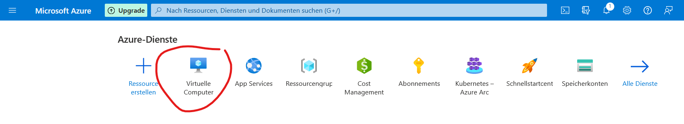
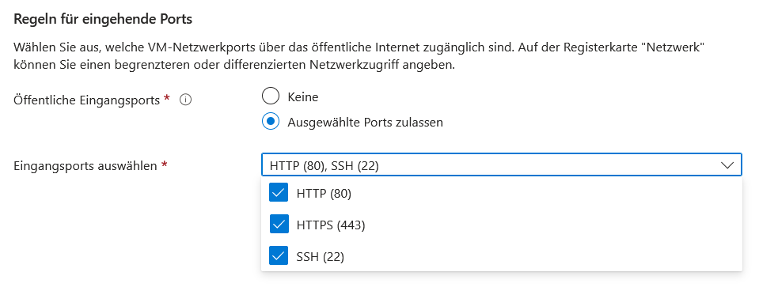
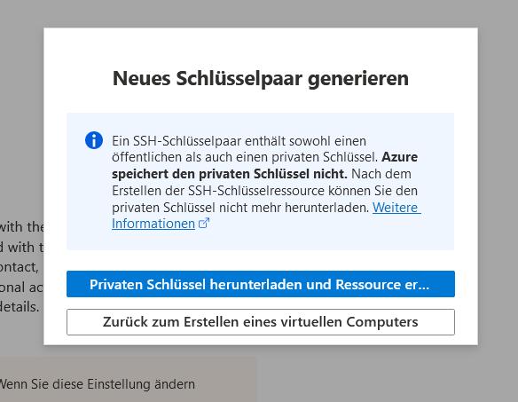

Virtuellen Computer anlegen
- Auf portal.azure.com mit der Spengergasse-Email anmelden
WICHTIG: Während der Anmeldung niemals Kreditkartendaten angeben. Falls Azure das verlangt nochmal prüfen ob ihr ein Studentenkonto erstellt habt.
- Zum
Virtuelle ComputerMenü gehen

Auf erstellen klicken, dannach auf Azure VM

Wähle eine bestehende Ressourcengruppe aus oder erstelle ggf. eine neue. Leg einen beliebigen Namen fest. Am besten mit deinem Kürzel oder intialen um doppelte Benennungen zu vermeiden.

Erstelle eine VM entweder mit Ubuntu oder alternativ mit einer Distribution mit der du dich gut auskennst. Zum authentifizieren ist ein SSH-Schlüssel empfehlenswert da man sich kein Passwort merken muss.

Bei den Eingangsport brauchen wir SSH (22) und HTTP (80). Über Port 80 werden wir später auf unsere Webanwendung zugreifen. Über Port 22 können wir eine Konsole der VM erreichen. Wenn du willst kannst du auch versuchen HTTPS einzurichten, ist aber für diese Übung nicht notwendig.

Klicke dann auf Überprüfen + erstellen die Zusammenfassung sollte folgendermaßen aussehen:

Nachdem die Ressource erstellt wurde bekommt man folgende Bestätigung:

WICHTIG beim Klick auf
Erstellenerstellt Azure uns einen privaten Schlüssel in einer pem-Datei. Diesen brauchen wir um uns einloggen zu können. Unbedingt herunterladen!

In der Übersichtsseite können wir zum einen die aktuelle IP unserer VM einsehen, als auch einen DNS-Namen festlegen:

Mit folgendem Befehl können wir uns jetzt in eine Konsole der VM einloggen:
ssh -i <dein-schlüsselname>.pem azureuser@<ip-deiner-vm>
In meinem Fall (bei dir anders) sieht der Befehl so aus:
ssh -i asphost_key.pem azureuser@108.143.154.216
Bevor man sich zum ersten mal einloggt fragt einen SSH ob man der Gegenseite vertraut.
The authenticity of host '108.143.154.216 (108.143.154.216)' can't be established.
ED25519 key fingerprint is SHA256:gspN+LirQ+6X4C3m9EX1Fc6fbMxv/GQ66FPvyFnXYUU.
This key is not known by any other names
Are you sure you want to continue connecting (yes/no/[fingerprint])?
Hier muss man yes eingeben bevor eine Verbindung aufgebaut wird. Für den am Anfang häufigen Fehler Unprotected Key file gibt es hier: https://superuser.com/questions/1296024/windows-ssh-permissions-for-private-key-are-too-open Lösungsansätze.
Erscheint dann eine Konsole mit grünem Text, hat der Login funktioniert. Für den nächsten Schritt müssen wir kurz zurück auf den eigenen Rechner wechseln. Das geht mit dem Befehl exit.
Daten übertragen in die VM
Im nächsten Schritt müssen wir user Projekt in die VM übertragen. Dazu eignet sich der Befehl sftp. Der Name steht für SSH File Transfer Protocol. Da FTP unverschlüsselt ist sollte man davon absehen es in seiner normalen Form zu verwenden.
Ähnlich wie bei SSH ist die Befehlsstruktur hier:
sftp -i <dein-schlüsselname>.pem azureuser@<ip-deiner-vm>
Dannach erschreint der Prompt sftp> welcher FTP-Befehle entgegen nimmt. Mit put <dateiname>.zip können wir eine Datei von einem lokalen Ordner in die VM verschieben. Sobald alles verschoben wurde kann man auch hier mit exit wieder das Programm verlassen.
Nachdem die Projektdateien verschoben sind können wir uns wieder mit SSH auf der VM einloggen (ssh -i ...) und mit der Installation beginnen. Zunächst sollte man wie bei jeder neuen Linux-Installation ein update durchführen. Das funktioniert unter Ubuntu mit
sudo apt update -y
Ist das Update fertig können wir diverse Programme installieren. Wir benötigen Docker fürs Ausführen sowie unzip um die zip-Datei zu entpacken. Als kleines Hilfsprogramm noch dos2unix.
sudo apt install unzip dos2unix -y
# Add Docker's official GPG key:
sudo apt-get update
sudo apt-get install ca-certificates curl
sudo install -m 0755 -d /etc/apt/keyrings
sudo curl -fsSL https://download.docker.com/linux/ubuntu/gpg -o /etc/apt/keyrings/docker.asc
sudo chmod a+r /etc/apt/keyrings/docker.asc
# Add the repository to Apt sources:
echo \
"deb [arch=$(dpkg --print-architecture) signed-by=/etc/apt/keyrings/docker.asc] https://download.docker.com/linux/ubuntu \
$(. /etc/os-release && echo "$VERSION_CODENAME") stable" | \
sudo tee /etc/apt/sources.list.d/docker.list > /dev/null
sudo apt-get update
sudo apt install docker-ce -y
Nun können wir mit unzip <dateiname>.zip unser Projekt auspacken. Um in den darin erstellen Ordner zu wechseln gibt es das Kommando cd <dein-projektordner>.
Installation Docker und Deployment mit Caddy
Nachdem wir die Projektdateien auf die VM übertragen haben, erstellen wir zunächst die notwendigen Docker-Konfigurationsdateien für einen mehrstufigen Build-Prozess.
- Erstelle in deinem Projektordner ein
Dockerfile:
# Build stage
# use latest lts node version
FROM node:22-alpine as builder
RUN apk add openssl
WORKDIR /app
COPY package*.json ./
RUN npm install
COPY . .
RUN npm run build
# use latest lts node version
FROM node:22-alpine
RUN apk add openssl
WORKDIR /app
COPY package*.json ./
RUN npm ci
COPY --from=builder /app/build ./build
COPY --from=builder /app/public ./public
COPY --from=builder /app/prisma ./prisma
RUN npm run prisma generate
EXPOSE 3000
CMD ["npm", "run", "start"]
Dass prisma generate funktioniert musst du darauf achten, dass im package.json in den scripts folgender eintrag ist: "scripts": {"prisma": "prisma"}
Um beim Befehl COPY . . nicht zu viele Daten zu übertragen kannst du die Datei .dockerignore hinzufügen. Alle darin aufgelisteten Dateien und Ordner werden nicht reinkopiert. Syntax ist ähnlich wie bei der .gitignore.
node_modules
- Erstelle eine
Caddyfileim Projektordner:
yourdomain.example.com {
# Reverse proxy to Remix server
reverse_proxy remix-app:3000 {
header_up Host {host}
header_up X-Real-IP {remote}
header_up X-Forwarded-For {remote}
header_up X-Forwarded-Proto {scheme}
}
# Enable compression
encode gzip
}
- Docker Compose für einfacheres Management:
Erstelle ein docker-compose.yml:
services:
remix-app:
build: .
restart: unless-stopped
networks:
- remix_network
environment:
- NODE_ENV=production
volumes:
- ./prisma:/app/prisma
env_file: .env
caddy:
image: caddy:2-alpine
restart: unless-stopped
ports:
- "80:80"
- "443:443"
volumes:
- ./Caddyfile:/etc/caddy/Caddyfile
- caddy_data:/data
- caddy_config:/config
networks:
- remix_network
depends_on:
- remix-app
networks:
remix_network:
driver: bridge
volumes:
caddy_data:
caddy_config:
- Deployment durchführen:
# Docker Compose starten
sudo docker compose up -d --build
Wartung und Monitoring
- Logs überprüfen:
# Container Logs anzeigen
sudo docker compose logs -f
- Container neustarten:
sudo docker compose restart
- Updates durchführen:
Funktioniert nur wenn man statt sftp die Daten zwischen privatem Rechner und Azure mit git überträgt.
# Neue Version pullen und Container neustarten
git pull
sudo docker compose down
sudo docker compose up --build -d
Troubleshooting
Häufige Probleme und Lösungen:
- Container startet nicht:
- Logs prüfen:
sudo docker compose logs - Build-Logs prüfen:
sudo docker compose build --no-cache -
Ports prüfen:
sudo netstat -tulpn -
Statische Assets werden nicht geladen:
- Prüfen Sie die Pfade in der Caddyfile
-
Verifizieren Sie die Build-Ausgabe:
sudo docker exec -it <container-id> ls /srv -
Performance-Probleme:
- Container Ressourcen überprüfen:
sudo docker stats - System-Ressourcen monitoren:
htop - Änderungen werden nicht übernommen
- Container muss bei jeder Änderung neu gebaut werden
- Start mit
docker compose up -d --build
HTTPS einrichten
Für eine produktive Umgebung mit eigener Domain, nutze folgendes Caddyfile:
yourdomain.example.com {
# Reverse proxy to Remix server
reverse_proxy remix-app:3000 {
header_up Host {host}
header_up X-Real-IP {remote}
header_up X-Forwarded-For {remote}
header_up X-Forwarded-Proto {scheme}
}
# Enable compression
encode gzip
}
Nach dem Ändern der Konfiguration:
sudo docker compose restart
Sicherheitshinweise
- Regelmäßige System-Updates:
sudo apt update && sudo apt upgrade -y
- Docker-Images aktualisieren:
sudo docker compose pull
sudo docker compose up -d
- Backup der Volumes:
docker run --rm \
-v caddy_data:/data \
-v $(pwd):/backup \
alpine tar czf /backup/caddy_data_backup.tar.gz /data